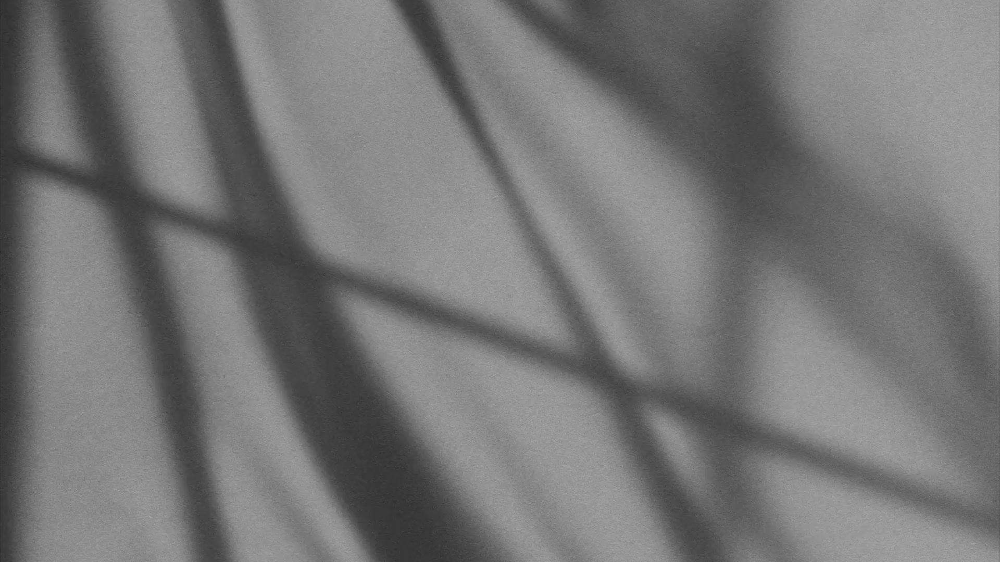

Kairos: Contemplating Our Relationship with Time

My NID thesis began with a question I couldn't stop thinking about: why does a clock make you feel like you're running out of time? Kairos was the attempt to answer it — a timekeeping artefact built around natural rhythms rather than numerical precision. The thesis work later led to an extended experimental research engagement with Titan Company Ltd, where the same questions were explored across 20+ concepts and prototypes.
The Research Question
Most timekeeping devices work by making time feel scarce. They divide the day into units that can be counted down, missed, or wasted. Kairos started from the opposite premise: what would it mean to design a timekeeping device that made you feel like you were part of time, rather than racing against it?
The research drew on linguistic analysis of how different cultures use temporal metaphors — time as a resource, as a river, as a cycle — and on the history of pre-industrial timekeeping, which was predominantly environmental: sundials, water clocks, the position of stars. The design question became: could a contemporary artefact recover that relationship?
Concept
Rather than displaying hours and minutes, Kairos depicts the arc of the sun across the day — rising, reaching its apex, descending — as a continuous, physical movement. The pace is slow enough to feel natural. The light warms and cools through the day. You don't read the time so much as sense it.
The artefact deliberately sits between functional object and contemplative piece. It tells time accurately — synchronised via NTP, driven by an ESP32 microcontroller — but communicates it in a way that resists the anxiety conventional clocks produce.
Build
The sun's arc is driven by a servo mechanism calibrated to the actual sunrise and sunset times for the user's location. An ESP32 microcontroller handles NTP synchronisation, keeping the movement accurate without manual adjustment. Warm LEDs shift colour temperature through the day — cooler in the morning, warmer at midday, amber at dusk.

What This Led To
Kairos was one artefact built around one direction. The thesis opened up a much larger question about the future of timekeeping — what other assumptions about clocks and watches could be challenged, and in which directions.
Titan Company Ltd continued this experimental research with me over an extended engagement, exploring the future of timekeeping devices across 20+ concepts and prototypes. Kairos was the starting point for that conversation. See Rethinking Time →